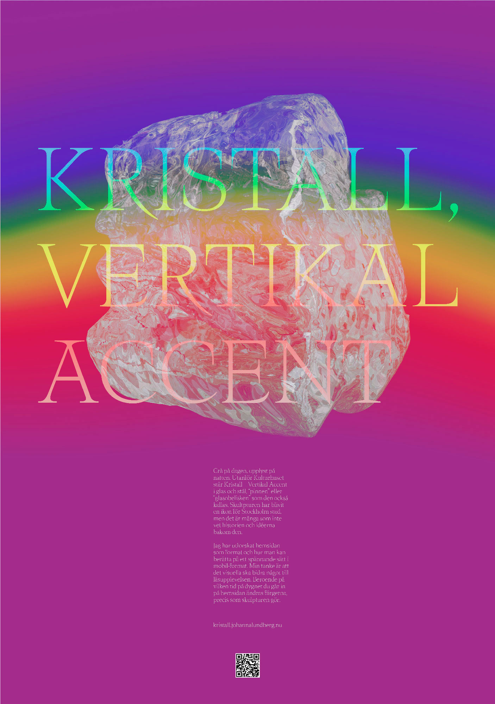
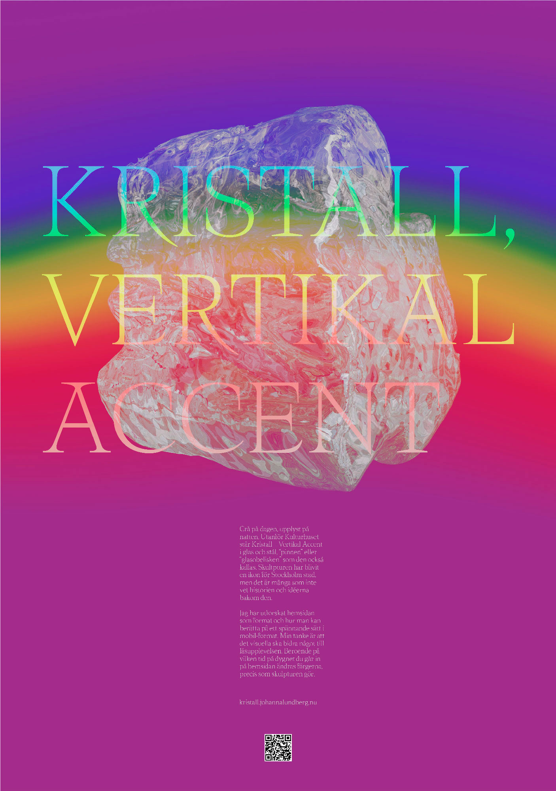

Gray in the day, lighted in the night. Outside Kulturhuset stands Crystal – Vertical Accent in glass and steel, or “the stick” or “the glass obelisk” which it’s also called. It has become an icon for Stockholm city, but many are not aware of the history and ideas behind it. I have explored the website as a format, and how you can tell a story in an interesting way in mobile-format. I want the visual to add something to the reading experience. Depending on what time during the day it is, the colours changes, just like the sculpture does. Visit the website here (looks best in mobile format).
 
